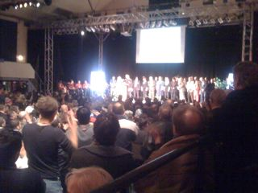
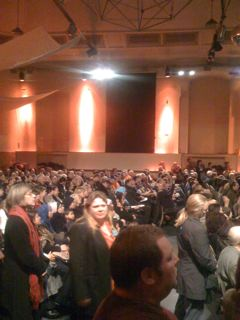

So heißen sie.Heute fand sie statt. Die Gründung. Zumindest haben die Veranstalter dass so genannt.
Genau genommen fand die auf 90 minuten geplante Veranstaltung (in einer Boxhalle!) nämlich nach zwei ein halb Jahre Vorarbeit mit den ganzen lokalen Vereinigungen statt. Die haben sich dort getroffen - jeder Verein oder Kirche oder Gemeinde oder irgend etwas hat sich vorgestellt und auch gesagt wie viele Leute sie mitgebracht haben.
Immer unterbrochen von fetziger Trommelmusik und auch ein paar Sketchen.
Und der Saal war proppevoll! So voll, dass der Veranstalter gebeten hat, dass die Jungen Leute aufstehen mögen für die Älteren. Und die Teilnehmer haben applaudiert und es gemacht. (Detail: die meisten Ordner waren Frauen - und nicht wenige mit Kopftuch)
Großartig.
Dann hat sich die Plattform vorgestellt und anhand von Adjektiven verortet:
- Bunt: Weil so verschiedene Gruppen, Religionen, Geschlechter und Generationen dabei sind
- Unparteiisch: Weil keine Wählerstimmen gebraucht werden
- Kraftvoll: Weil über 40 Organisationen vertreten werden
- Wissend: Weil alle Mitglieder aus Moabit und Wedding sind und daher wissen was die Probleme sind
- Zielstrebig und Selbstbewusst: Weil man für Ergebnisse Arbeitet, kompromissbereit, aber hart in der Sache
- Langlebig: Als dritte Kraft neben Wirtschaft und Politik, als im positiven Sinne: "Unruhestifter und Anstifter!"

Danach haben alle Teilnehmenden Organisationen mehrsprachig und mit vielen persönlichen Grußworten vorgestellt. Jeweils mit erklärung warum sie teilnehmen und mit wie vielen Leuten sie gekommen sind: 10, 15, 12, 49, 160... Alles zusammen waren etwa 1200 Leute anwesend (und das war eine realistische Zahl)
Sätze daraus: "Gemeinsam sind wir Stark!", "Misch dich ein, misch mit!", "Let us stay together, work together, fight together, for the common good!", "Ein Verantwortlicher musste jemand im Krankenhaus besuchen, Kieferbruch, Intolleranz und der übliche Baseballschläger.", "Der Islam fordert uns auf uns zu engagieren", "Zwischen Knast und Kanzleramt", "Geht nicht, gibts nicht!"
Und damit war die Bürgerplattform "Wir sind da!" gegründet.
Ach ja, als Abschluss der Vorstellungsrunde hat Dico noch Werbung für die Fortbildungen gemacht die sie in Community Organising für die Teilnehmer der beteiligten Gruppen anbieten.
Und die Arbeit fing an. Einzelne Community-Leader haben erzählt was in den Bereichen die Sie überblicken jeweils ein großes Problem ist. Zwei Beispiele: Die meisten Migrantenkinder schaffen es nicht in ein Gymnasium zu kommen sondern müssen stattdessen Arbeiten - daher kriegen sie zu wenig Bildung mit und schlechtere Jobs. Oder das vor einer Kirche ständig gesoffen wird, bis Schießereien stattfinden.
Dann musste ich leider gehen, obwohl ich gerne geblieben wäre.
Hoch spannend.